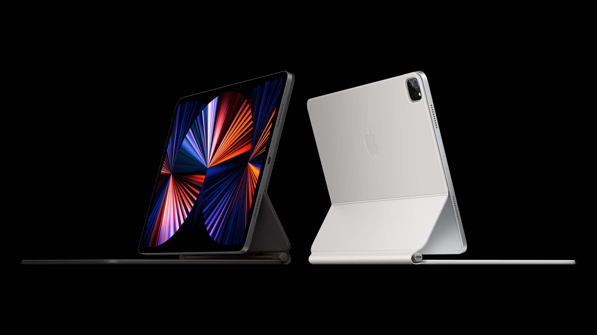

O último update do iPad Pro, o que tem de novo?

A Apple disponibilizou o update para o iOS 14. O sistema operacional da fabricante trouxe uma série de novidades, como os widgets, biblioteca de apps e novos recursos para a Siri, assistente de voz personalizado da empresa.
Para a próxima versão foi confirmado que modelos como o iPad Pro serão atualizados via OTA (Over-The-Air) para o iOS 15. O suporte para novas versões do iOS mesmo em aparelhos mais antigos é uma característica da Apple.
Algumas das grandes novidades que chegarão no iOS 15 estão relacionadas ao FaceTime, onde agora há o suporte ao áudio espacial, que passa a sensação da posição do locutor na ecrã, e o isolamento da voz do utilizador do barulho ambiente, para uma melhor interpretação do que está a ser dito. Além disso, as videoconferências contam agora com fundos desfocados, presentes no modo retrato aplicado durante as fotos, e a possibilidade de compartilhar músicas e vídeos durante as videochamadas (SharePlay).
Para ajudar o utilizador a visualizar o que é realmente importante para o utilizador no momento, a Apple implementou filtros no iOS 15, chamado a funcionalidade de "Focus". Através desta ferramenta, é possível personalizar as notificações de aplicações fazendo mais sentido aparecer dependendo do tipo de atividade que está a ser feita pela pessoa no momento, como, por exemplo, quando você está trabalhar. Você poderá escolher entre "Não Pertubar", "Personalizar", "Trabalho", "Dormir".
Além de selecionar quais notificações de apps serão mais importantes para serem exibidas, o sistema irá agrupar fotos partilhadas de mensagens e realizar outras organizações para que tudo seja exibido de forma eficiente num único "card" personalizado de acordo com a utilização do utilizador. Todas estas formas de exibição e configurações das notificações serão sincronizadas em todos os dispositivos.
Não Perca

Como ganhar dinheiro fácil: os novos métodos digitais que vão explodir a sua mente!!
Ler Mais >>

Conheça o Fugaku, o PC mais potente de 2022
Ler Mais >>

Rainbow Six Extraction chega ao Xbox Game Pass no lançamento
Ler Mais >>

WhatsApp mostra fotos de contatos em notificações no iPhone
Ler Mais >>